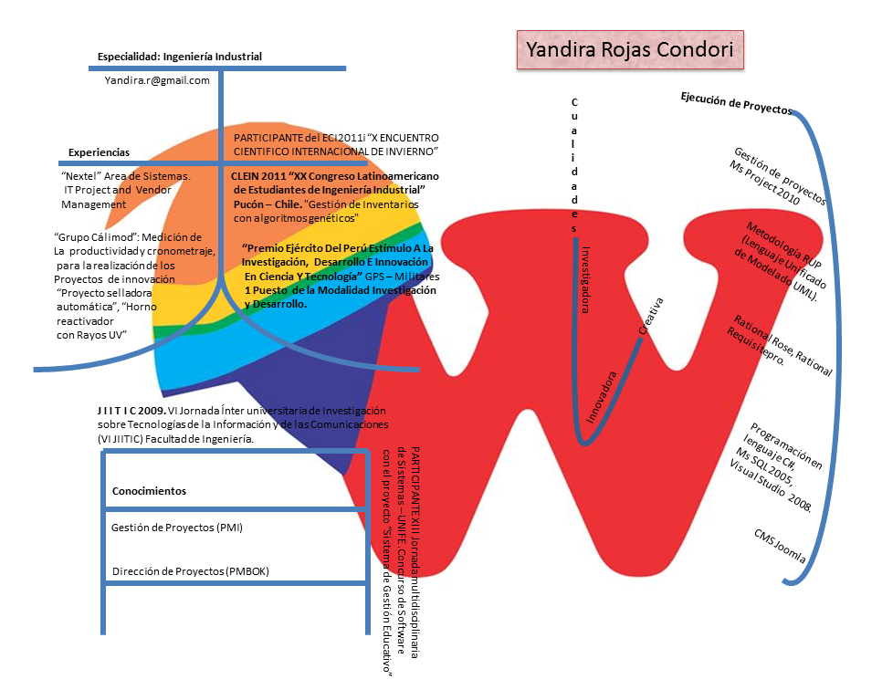
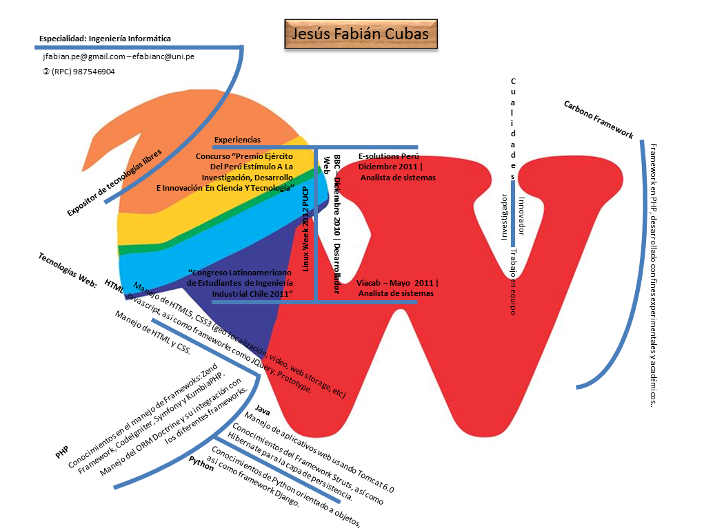
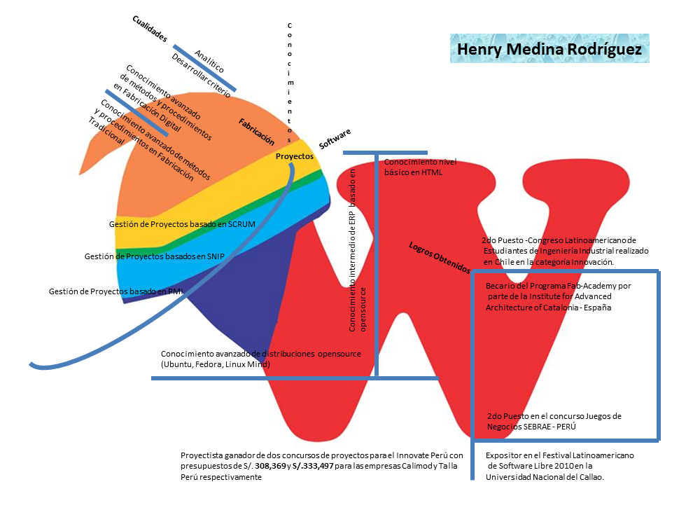

-
Agenda
-
Ver Detalles
mayo 16 - 27
Festival de Cannes
-
Ver Detalles
mayo 26 - 27
Festival de deportes de aventura en Luna
-
-

-
La luz
Líder indiscutible en la compra venta de recuerdos a nivel mundial.
-
El legado
Producción, venta y convenio de bienes, con capacidad de aliciente diseño personalizado, en satisfaccion de clientes y activos del equipo.
-
Recorrido
La trancendental vida del hombre, sus huellas y la grandiosa creación natural es elemento atractivo que ahora a travez del Turismo, podemos descubrir.
El Rumbo turístico que elegimos, con conocimiento previo, nos lleva a buscar con nuestros intereses particulares, inquietudes, pasiones, deseos, emociones nuestro recorrido por conocer, respirar, saborear nuestro mundo, con todos nuestros sentidos.
-
-

-
Huacos
Un huaco es una pieza cerámica de factura delicada y de características estéticas notables producida por alguna cultura peruana de los Andes centrales o de la costa de este país.
Huaca de la voz nativa waqa, de donde los huacos tomaron su nombre.
La producción cerámica preincaica y del Imperio inca adoptó toda clase de formas, estilos y calidades. El término huaco se restringe no obstante a ejemplares no reservados al uso diario sino al suntuario o ritual.
Normalmente está asociado a piezas con características plásticas notables: huacos escultóricos representando volúmenes complejos estilizados e incluso escenas culturales, edificios, volúmenes naturalistas como los huacos-retrato, representando rostros humanos, o partes del cuerpo a manera de exvotos, eróticos, instrumentos de trabajo, diversos frutos y alimentos, animales, etc.
Cuando las piezas no son de cerámica escultórica, los huacos se caracterizan por su riqueza pictórica. Así tenemos toda clase de vasijas y recipientes cubiertos de motivos polícromos abigarrados, normalmente representaciones zoomorfas o antropomorfas, mitológicas, eróticas, etc. La cerámica bicolor mochica se caracteriza por ceramios pintados detallando escenas complejas a un nivel narrativo.
-
Idea
Waco, Es una gran idea para captar esos momentos valiosos en 3 dimensiones.
La producción de recuerdos que encamina Waco, es plenamente con el poder otrogado al usuario para el diseño, de modo que en en satisfaccion de cliente y resguardo pleno del MOMENTO, se obtenga un bien consagrado.
Al paralelo de nuestros antepasados quienes expresaron sus conocimientos, realidad, costumbres e imaginación, empleando materiales moldeados delicadamente, queremos registrar nuestros propios tiempos y realidades mediante un Waco.
-
Tecnica
El que desee adquirir un wAco, accederá a nuestra página en internet que ofrece varios medios para solicitarlo y personalizarlo.
Si lo hace por PC o laptop se encontrara con la web, se tomaran las fotografías en frontal y perfil. Con esto el programa generará la imagen 3d que se envía a imprimir.
Si lo hace por un smartphone o una tablet, accedera a una aplicacion gratuita.
En ambos casos el cliente modifica a su estilo el avatar o recuerdo.
Además se obtendra el GPS, para una mejor experiencia de usuario porque con él, podemos saber su ubicación y sugerirle un accesorio, lugar o vestimenta apropiada para la ocación.
-
-
-
Los hechos que marcaron...
El hombre en la luna
Revolución Industrial
-
Charles Chaplin
La caía del muro de Berlin
-
-
-

-

-

-
La Marca Perú recibe máximo galardón de los Effie 2012
PromPerú resultó ganador del Gran Effie 2012 por el lanzamiento de la campaña de la Marca País en el Perú. Este galardón se otorga al mejor entre los ganadores de los Effie de Oro en todas las categorías en competencia.
Ministro Silva lanza programa de desarrollo sostenible para Quinua en Ayacucho
El ministro de Comercio Exterior y Turismo, José Luis Silva Martinot, lanzó el programa “De mi Tierra, Un Producto” en la localidad de Quinua (Ayacucho)...